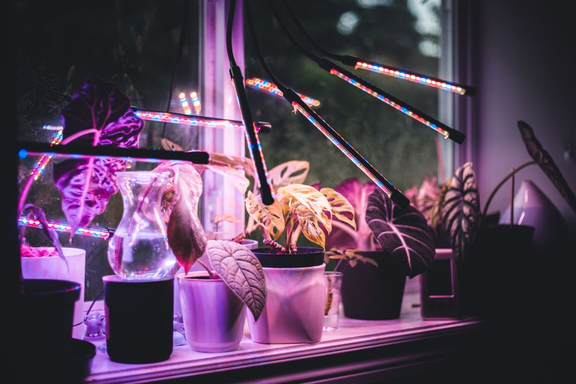

Errores comunes al iluminar tus plantas de interior

Photo: Erik Mclean / Pexels
La luz es el factor que más influye en la salud de una planta de interior. Los errores son frecuentes, pero se corrigen fácilmente cuando observas la planta.
Error 1: ponerla a pleno sol detrás del cristal
Una ventana orientada al sur o al oeste puede quemar las hojas de plantas como el pothos, la calathea o los helechos. Las señales son manchas marrones o blanquecinas y hojas secas. Aleja la planta del cristal o filtra la luz con una cortina fina. Las suculentas, los cactus y el aloe toleran mejor el sol directo, sobre todo si se acostumbran poco a poco.
Error 2: creer que «poca luz» significa «sin luz»
La zamioculca, la sansevieria o el pothos toleran poca luz, pero crecen mejor con luz natural indirecta. En una habitación sin ventana, ninguna planta sobrevive mucho tiempo sin una lámpara de cultivo.
Error 3: cambiarla de sitio constantemente
Mover a menudo una planta la estresa. Si la cambias de lugar, hazlo gradualmente: puede perder algunas hojas durante unas semanas.
Error 4: olvidar que la luz cambia con las estaciones
En invierno la luz disminuye mucho: acerca las plantas a una ventana y riega menos. En verano, protégelas de las horas más calurosas.
Error 5: usar mal la lámpara de cultivo
Una lámpara LED para plantas se coloca a la distancia indicada por el fabricante y se enciende con un horario regular, a menudo de 10 a 14 horas al día. Si está demasiado cerca o es demasiado potente, quema las hojas.
Señales para vigilar
- Tallos largos y pálidos que se estiran hacia la ventana: falta de luz.
- Manchas marrones secas: demasiado sol.
- Hojas amarillas por todas partes: revisa también el riego.
Una planta tóxica para tus mascotas (pothos, filodendro, zamioculca) sigue siendo tóxica con cualquier luz: colócala fuera de su alcance.